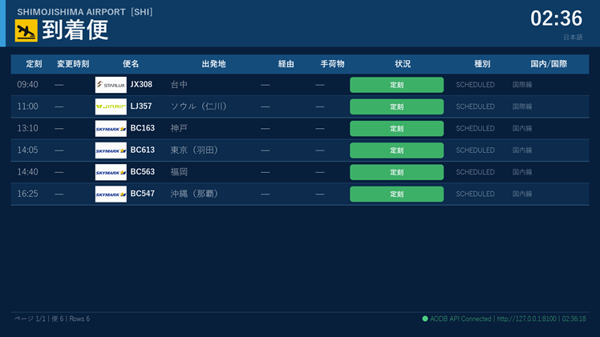
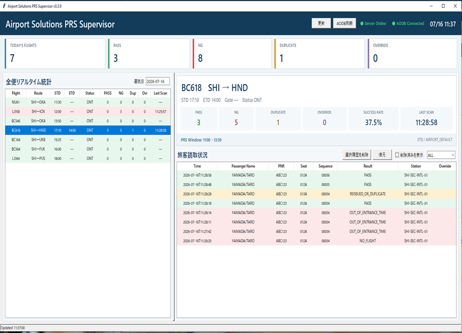
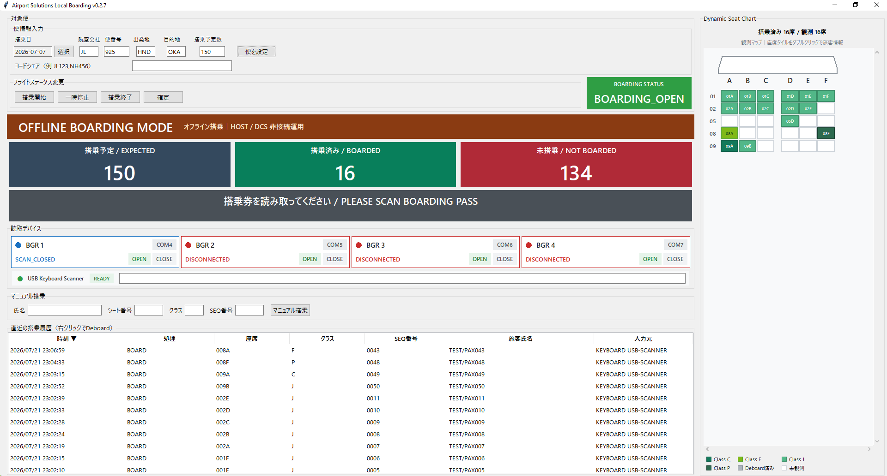
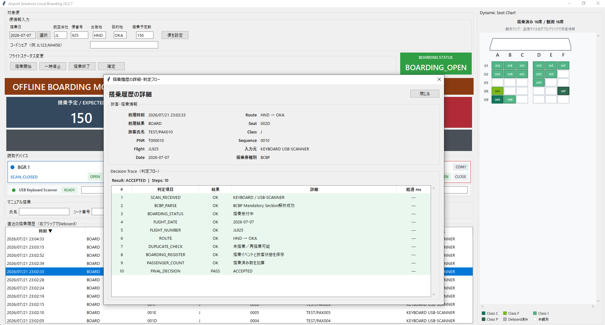
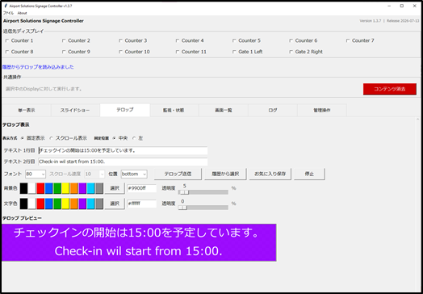

製品・ソリューション
空港の情報管理、旅客案内、保安検査、チェックインカウンター、搭乗口業務をつなぐ製品群を開発しています。掲載画面には開発用のデモデータを使用しています。
プロトタイプ稼働・連動検証中Airport Operations Platform
AODB / FIDS
AODBで管理する便情報を、出発・到着案内、搭乗口、手荷物受取などのFIDS画面へ供給します。地方空港や少人数の体制でも管理しやすい、Windows PCとSQLiteを中心としたシンプルな構成です。
- 定期便・季節便・各日運航状況の管理
- 運航時刻、搭乗口、手荷物受取、ステータスの更新
- 多言語の出発・到着・搭乗口・手荷物表示
- AODB APIを利用した表示連携

AODB 各日運航状況


基礎開発中Passenger Processing
Passenger Reconciliation System
搭乗券のBCBPとAODBの運航情報を照合し、保安検査場への入場可否を判定します。判定結果を現場スタッフと旅客に明確に表示し、Supervisor画面から便別の状況を確認できます。
- BCBP読取とAODBによる便照合
- 入場可能時間帯、重複読取などの判定
- 便別・端末別のリアルタイム状況確認
- 判定履歴と運用上書きの管理

保安検査場端末（デモデータ）

プロトタイプ稼働・機能検証中Gate Operations
Local Boarding Application
HOST／DCSに接続しない環境でも、搭乗券の読取、搭乗人数の集計、搭乗履歴の確認をローカルで行える搭乗口業務アプリケーションです。便ごとの搭乗状況と座席分布を一つの画面で把握できます。
チャーター便・臨時便など、常設の搭乗システムを用意しにくい限定運用に最適です。
- BCBP搭乗券の読取と搭乗受付
- 搭乗予定・搭乗済み・未搭乗人数のリアルタイム集計
- 最大4台のBGRとUSBキーボード型スキャナーに対応
- クラス別・搭乗状況別のダイナミックシートチャート
- 搭乗履歴、判定フロー、DEBOARD処理の確認

オフライン搭乗管理画面（デモデータ）

想定する運用チャーター便臨時便・季節便DCS非接続の搭乗口障害・代替運用
プロトタイプ稼働・導入準備中Digital Signage
Airport Solutions Signage
ControllerからLAN上の複数Displayへコンテンツを配信する、運用しやすいデジタルサイネージです。空港カウンターだけでなく、施設、店舗、イベント、個人用途にも展開できる汎用設計です。
- 静止画・動画・スライドショー配信
- 多言語テロップと表示位置・色の調整
- 複数画面の選択、状態確認、サムネイル表示
- タイムアウト・再送・ログによる障害把握

Controller スライドショー管理

実機検証中Contingency Operations
Airport Solutions Offline Print
障害時やオフライン運用で使用する搭乗券（ATB）と手荷物タグ（BTP）の印刷を一つの画面に統合。AEA Native通信による実機プリンタとの接続・印刷を検証しています。
- ATB・BTP印刷データの生成
- IATA仕様を意識した入力チェック
- 搭乗券・手荷物タグの印刷プレビュー
- プリンタ状態、通信ログ、印刷履歴の確認

ATB / BTP 統合画面（デモデータ）
掲載製品は開発・検証段階のものを含みます。画面、仕様、対応機器は予告なく変更される場合があります。提供条件や導入時期は個別にご相談ください。